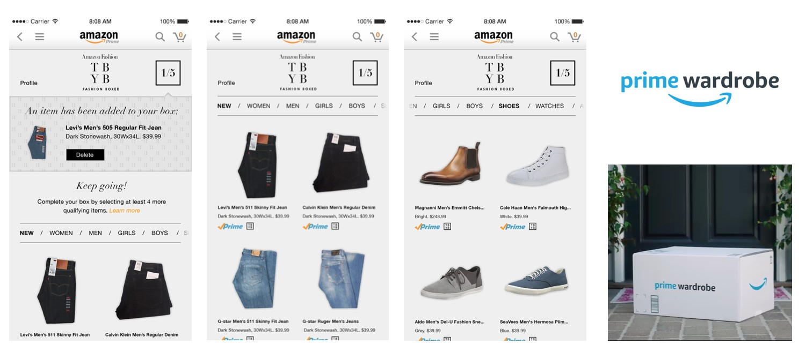
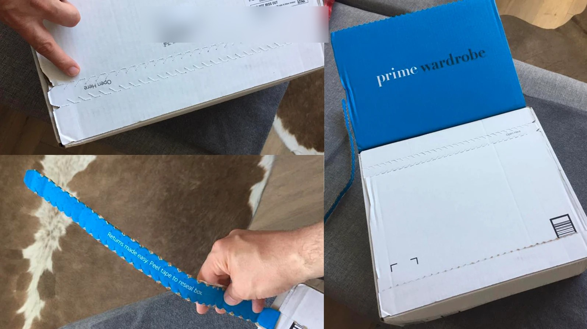
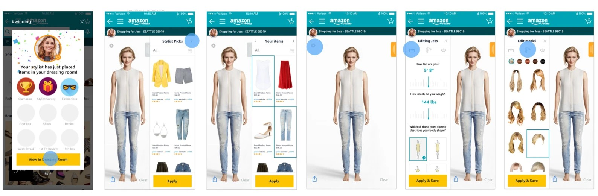
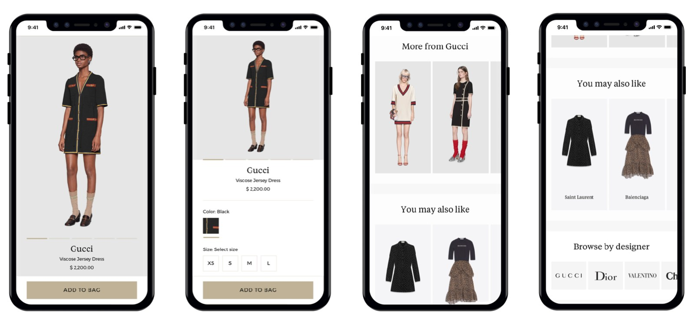
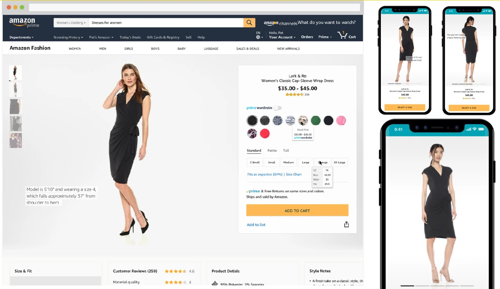

Amazon
- Role Head of Design and Research. Amazon Fashion, 2015 to 2019. Amazon Photos, 2019 to 2022.
- Team Fashion: 5 designers and 2 researchers to 20, adding program management, design technology, and managers. Photos: 8 to 19.
- Work Prime Wardrobe, concept to launch. Luxury Stores. Project Cooper, the Photos rebuild: CSAT 61% to 78% in six months. Mobile, web, desktop, Echo Show, Fire TV.
Amazon Photos
Photos began as cloud storage that happened to hold photos; years of additions by different teams left it trailing native apps. Six million monthly active customers, and underperforming for a Prime-bundled service.
Project Cooper
Leadership green-lit a teardown and rebuild. Research set the order. The whole list: show me my photos, help me find them fast, let me share them easily, surprise me with memories, show me my account. The home screen took the first two; the rest followed.
We set tenets with Dev and PM first, so three orgs argued from one set of criteria. The design direction shaped the rebrand that shipped alongside. Most features carried over unchanged; the gain was making them usable and findable.
Shipped
61% to 78%CSAT within six months of launch



Amazon Fashion
In 2015 the US spent roughly $300 billion on clothing and shoes, under a tenth of it online. Prime Wardrobe, born Prime Try Before You Buy, took aim at the weak point: judging a garment from a detail page.
Prime Wardrobe
Fill a box, shipped free, seven days to try, pay only for what you keep. I pitched and resourced the design with the product owner and executive leadership, and saw it through to launch. Prime Stylist, a curated box, followed.

Luxury Stores
My last project there was the luxury brands exploration: a walled garden in Amazon's app, only the most exclusive fashion brands, minimal store presence, content carrying the experience. No legacy to design around. It launched more than two years after we designed it, remarkably like the original.

The detail page, as a lesson
Four years on the fashion detail page, where every change had to win for all Amazon customers and pass web labs. Glacially incremental, and it taught me how to move a shared platform: negotiate, test, pick the changes that help everyone. Shared tenets later pulled my team, marketing design, and Shopbop design into one fashion experience across Amazon.